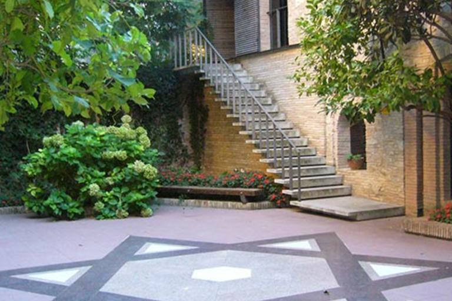

Visita · Girona
Explica la història de les comunitats jueves medievals de Catalunya, amb una atenció especial a la de Girona. Destaca la col·lecció única de làpides hebrees medievals procedents del cementiri jueu…